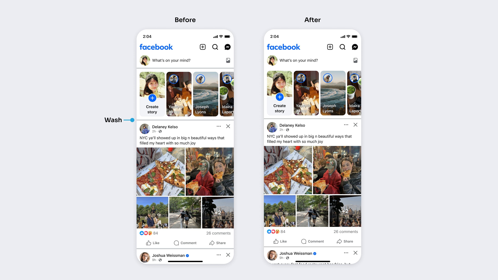
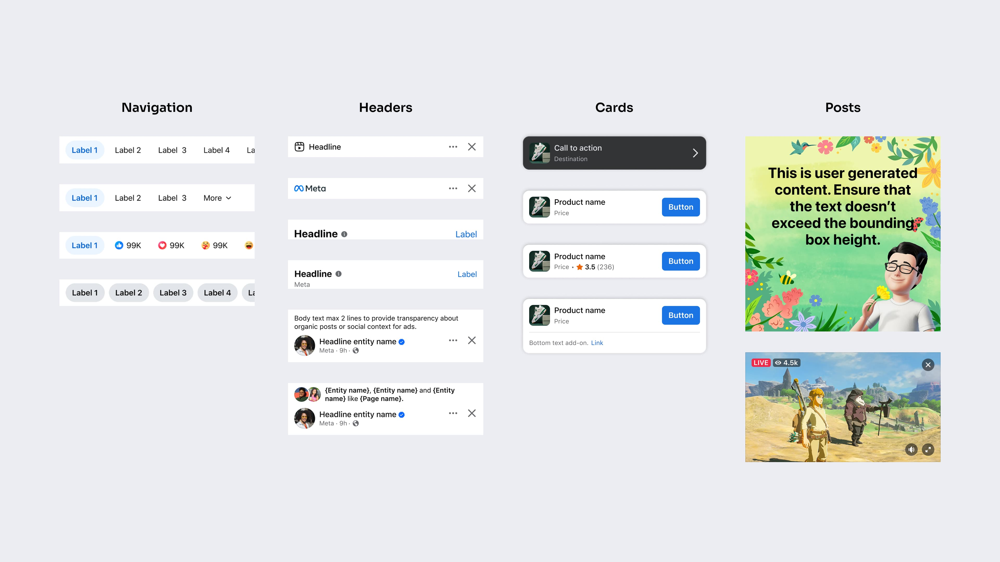
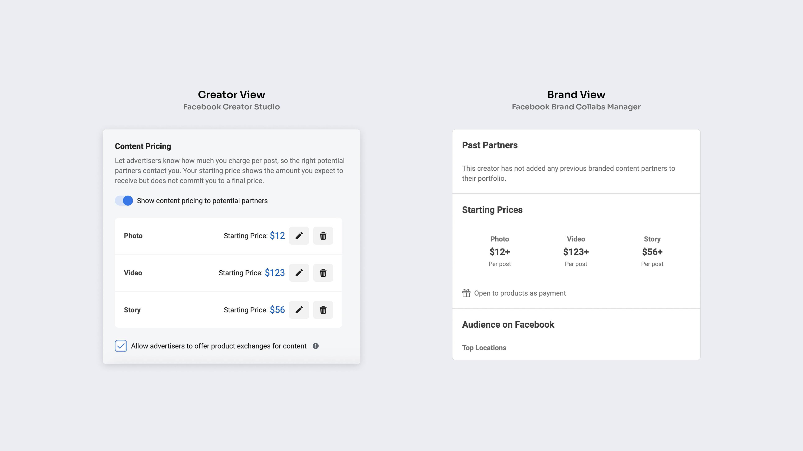

Facebook’s wash dividers between feed units were chunky and dated compared to competitors, making it harder for users to get from post to post.
Reduced wash gap size and darkened slightly, which modernized feeds app-wide and helped users jump to posts faster—boosting yearly revenue by $3.2M.

Low design system adoption (17%) plus frequent testing created fragmented UX, custom components built from scratch, and severe tech + design debt app-wide.
Defined 7 new responsive components with engineering and accessibility specs, Figma components, and usage guidance—driving 80% design system adoption in 1 year and alignment with new product team + user needs. Produced +$300M in incremental revenue.

Branded content creators don’t know what to charge, and brands don’t know what to pay—causing sponsorship deals to stall during outreach and negotiation.
Introduced 0→1 features for Facebook’s 1st pricing ecosystem on 2 web platforms, enabling both parties to communicate pricing needs and match with the right deals. Reached 75% adoption within 3 months of shipping.

Built features for digital asset management, 0→1 design for AI tools, and experiment tooling across web, desktop, responsive, and mobile. Educated and evangelized tools across Meta. Produced employee workflow efficiencies and time savings. For details, please contact me.